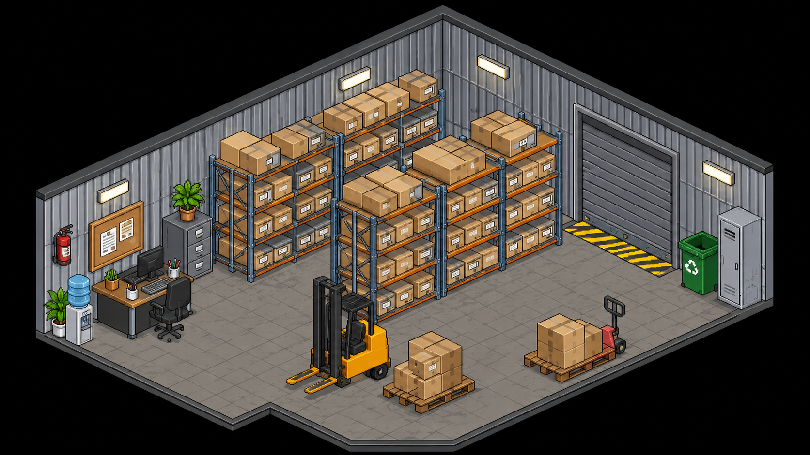

Audit Organisationnel M2 • Cliquez sur un carton pour zoomer et l'ouvrir

📦 Carton ouvert : Cliquez sur une fiche suspendue pour l'extraire et la lire entièrement.
L'empreinte matérielle d'une forteresse documentaire